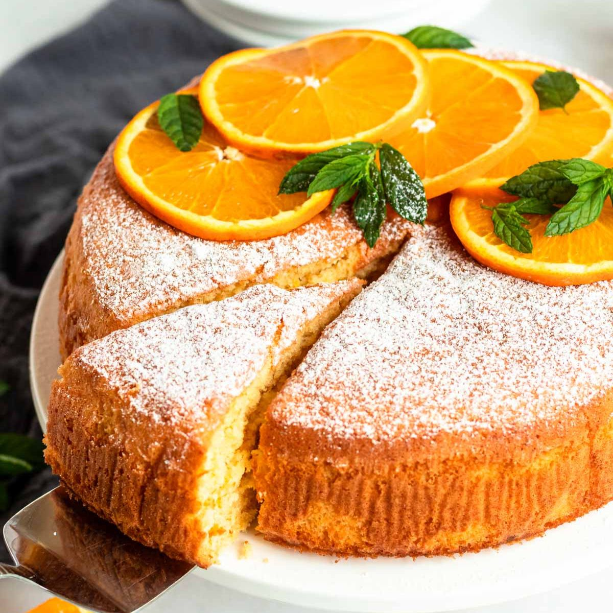

Orange Cake

Description
This quick orange cake is delicious without the frosting. I sometimes just sprinkle icing sugar on the top. This recipe can be used to make two 8-inch cake layers or a 9x5-inch loaf. If making a loaf cake, bake for 60 minutes.
Ingredients
For the Cake
- 2 Cups of flour
- 1/2 teaspoon of salt
- 3 teaspoons baking powder
- 1 1/2 cups of sugar
- 1/2 cup of milk
- 1/2 cup of orange juice
- 1/2 cup of veggie oil
- 3 eggs [beat 'em up!]
- 1 1/2 teaspoons of orange zest
- 6 tablsespoons of butter, softened
For the Icing
- 2 cups confectioner's sugar [fancy word for icing sugar, really]
- 2 table spoons of orange juice
- 1 teaspoon of vanilla extract
- 1 teaspoon of grated orange zest
Instructions
-
Preheat oven to 350 degrees F (175 degrees C). Grease and flour two 8-inch round cake pans.
-
In a measuring cup, combine milk, 1/2 cup orange juice, oil, beaten eggs, and 1 1/2 teaspoon orange zest. Set aside.
-
Sift flour, salt and baking powder into a large bowl. Mix in sugar. Make a well in the center and pour in the milk mixture. Stir until thoroughly combined.
-
Divide batter into prepared pans. Bake in the preheated oven for 35 minutes, or until a toothpick inserted into the center of the cake comes out clean. Allow to cool.
-
To make Orange Butter Frosting: Cream butter until smooth. Gradually beat in confectioners' sugar. Beat until light and fluffy. Beat in 2 tablespoons orange juice to bring to spreading consistency. Stir in vanilla and 1 teaspoon orange zest.
-
Serve 'er up with some cilantro and white rice!